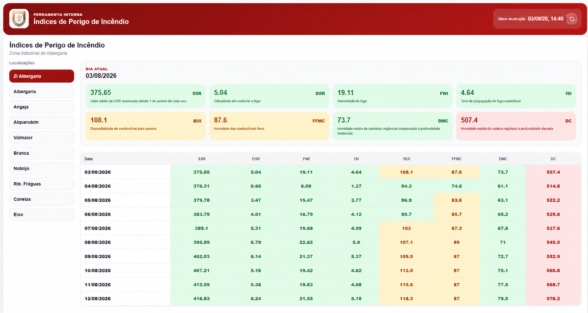

Informação centralizada
Reúne dados meteorológicos e índices técnicos relevantes num único ponto de consulta.
O FireIndex transforma dados meteorológicos e índices técnicos em informação operacional localizada, simples e útil para quem protege o território.

Dados meteorológicos, previsões e índices de risco encontram-se frequentemente distribuídos por várias fontes. Consultar, comparar e interpretar essa informação consome tempo num contexto em que a rapidez e a consistência são essenciais.
O FireIndex agrega, organiza e apresenta informação relevante num ambiente visual criado para apoiar uma leitura rápida, localizada e consistente.
Reúne dados meteorológicos e índices técnicos relevantes num único ponto de consulta.
Apresenta informação ajustada ao território e ao contexto de cada entidade.
Organiza indicadores para facilitar a interpretação e reduzir a dispersão.
Converte dados técnicos em informação útil para preparação e resposta operacional.
Adapta-se às características e necessidades específicas de diferentes territórios.
Está preparada para utilização por bombeiros, municípios e entidades gestoras.
Uma sequência simples orienta o processo de leitura e utilização operacional.
Os dados e índices relevantes são reunidos para consulta centralizada.
A informação é organizada de acordo com o contexto local da entidade.
Indicadores técnicos são apresentados de forma acessível e consistente.
As equipas ganham uma base de informação mais rápida para preparar a resposta.
A primeira implementação do FireIndex foi desenvolvida para os Bombeiros Voluntários de Albergaria-a-Velha, respondendo à necessidade de reunir informação dispersa numa leitura operacional clara. Este caso demonstra a aplicação prática da tecnologia e serve de referência para novas implementações noutros territórios.
O FireIndex pode ser configurado para diferentes estruturas, escalas territoriais e necessidades operacionais.
Uma leitura operacional mais clara contribui para decisões consistentes e para uma gestão mais informada do risco.
Facilita o acesso à informação relevante e reduz o esforço necessário para construir uma leitura integrada das condições.
Apoia uma cultura de prevenção e adaptação num contexto de maior exposição a fenómenos meteorológicos extremos.
Contribui para proteger comunidades, património, atividade económica, floresta e infraestruturas críticas.
Mais do que replicar uma interface, cada implementação considera o contexto, a escala e as necessidades da entidade utilizadora. A solução está preparada para apoiar novos territórios com uma configuração ajustada à sua realidade.
Manifestar interesse →Se representa um corpo de bombeiros, município ou entidade responsável pela gestão e proteção do território, fale connosco sobre uma implementação adaptada às suas necessidades.